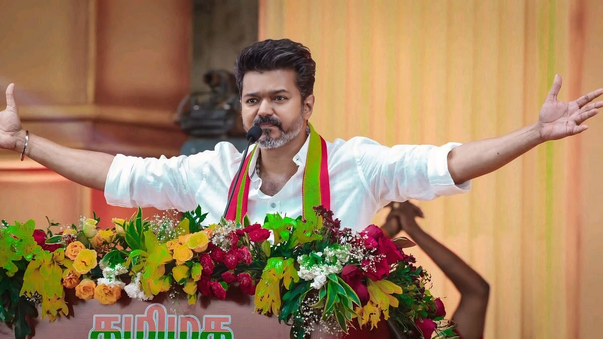

Tamilaga Vettri Kazhagam (TVK) emerged as the winner of the 2026 Tamil Nadu Assembly election by becoming the single largest party in the state. The party, led by Vijay, gained huge public support, especially from youth and first-time voters.
TVK won the highest number of seats among all parties and created a major political change in Tamil Nadu. The election became historic because for many decades Tamil Nadu politics was mainly dominated by DMK and AIADMK. The rise of TVK marked the beginning of a new political era in the state.
Although TVK became the largest party, it did not fully cross the majority mark required to form the government alone. However, the party’s success made Vijay one of the most important political figures in Tamil Nadu politics.